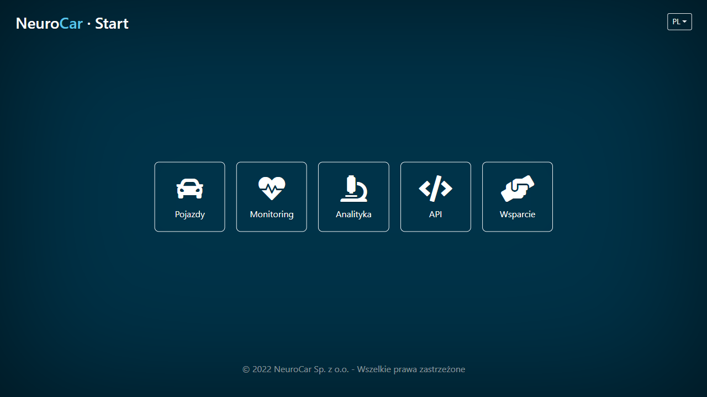

5. Software¶
5.1. Terminal VI¶

This is a dedicated firmware for devices performing terminal functions – the software controls all functions of the device ensuring continuous 24/7 operation. In particular, it controls camera parameters, controls the status of storage media, controls time synchronization, manages communication modules and controls data transmission to the host system.
The firmware has a built-in graphical interface (GUI) accessible through any web browser supporting HTML-5. Using it, the operator can monitor the status of the device, can view measurement data (registered vehicles) in real time. The GUI also allows managing access privileges.
The firmware also has RestAPI implemented, allowing the device to be accessed and controlled by an automated higher-level system.
5.2. BackOffice¶
The software for the central system runs in the cloud under the control of the Kubernetes environment. The software has a modular design that allows the architecture to be flexibly adapted to the user’s needs. The following sections list the most important applications.
5.2.1. Base¶
The Base application is the basis for the operation of the entire central system and consists of modules implementing the main functionalities:
authentication
providing API and GUI
user/group management
data storage and search management
configuration management (configuration), including management of the list of measurement devices (terminals) and the list of measurement points (locations)
management of data / statuses collection (receivers)
managing the flow of data between system components (message routing)
notification management – sending data to higher-level systems
providing maps for other applications (in vector and raster form)
A component of the Base application is also the main system startup screen.
5.2.2. Vehicles¶

The Vehicles application is a dedicated module that allows the user to view data on registered vehicles. The application works as a WEB application. The user has access to data on the location of measurement points, can search for registered vehicles using an extensive filter mechanism, can reach a full list of vehicle information (pictures, metadata). There is also an option to download data in tabular format.
5.2.3. Monitor¶

The Monitor application is used for pro-active supervision of measurement infrastructure using the Icinga package. The application controls the status of all measurement devices and the status of critical services running in the central system. In case of failure, the application provides the ability to send notifications (e.g. e-mail) to a designated group of operators.
5.2.4. Analytics¶

The Analytics application is used for extended data analysis using the JupyterLab package. The application is provided via GUI and allows you to run scripts prepared by NeuroCar downloadable from https://gitlab.com/ncar-tools/04
5.2.5. Support¶

The Support application runs in the cloud and is dedicated for the management of the ticket tracking process (Ticket tracking).